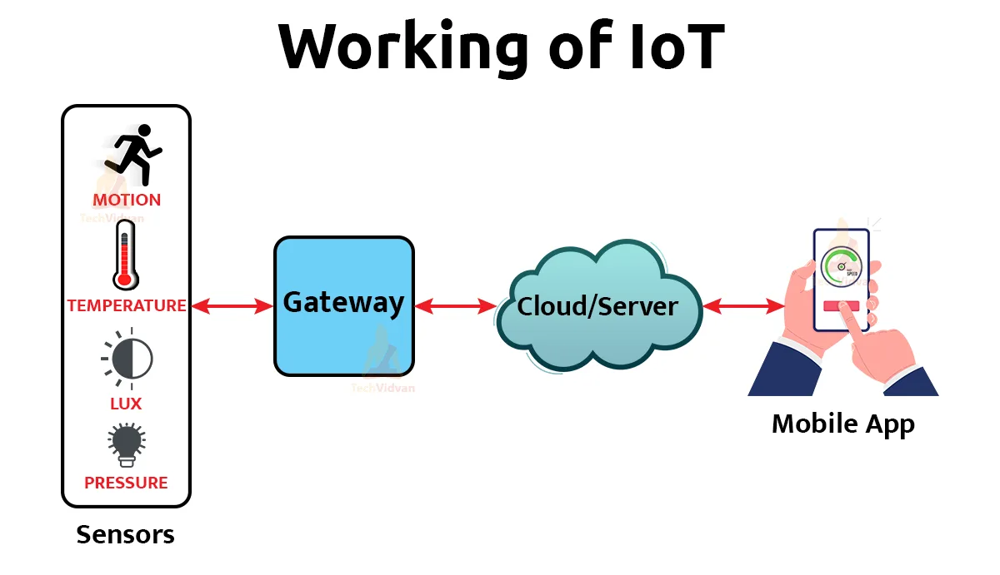

Інтернет речей працює як безперервний замкнений цикл обміну даними між фізичними пристроями та програмами. Спочатку вбудовані в об'єкти датчики фіксують зміни в навколишньому середовищі, наприклад температуру, рух чи рівень вологості. Далі мікроконтролер передає ці зібрані показники через бездротову мережу — як-от Wi-Fi, Bluetooth, Zigbee або мобільний зв'язок — до локального шлюзу чи напряму на віддалений хмарний сервер. Там програмне забезпечення аналізує отриману інформацію та звіряє її із заздалегідь заданими правилами або алгоритмами. На основі цього аналізу система миттєво ухвалює рішення та відправляє зворотну команду на виконавчі механізми, змушуючи розумну лампу увімкнутися, клапан — перекрити воду, а додаток на смартфоні — надіслати вам сповіщення.
